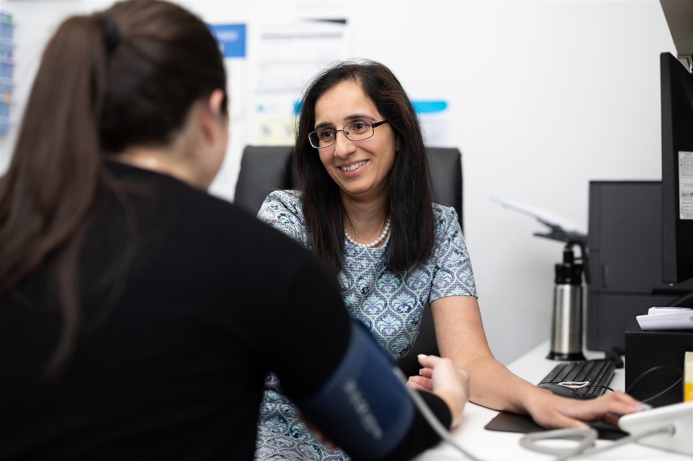
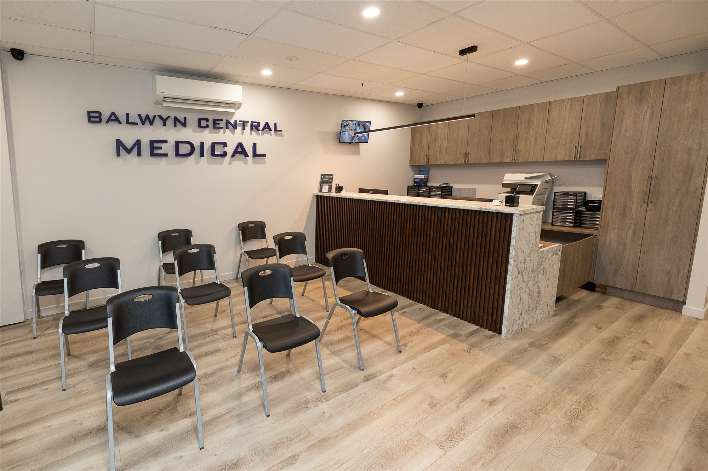
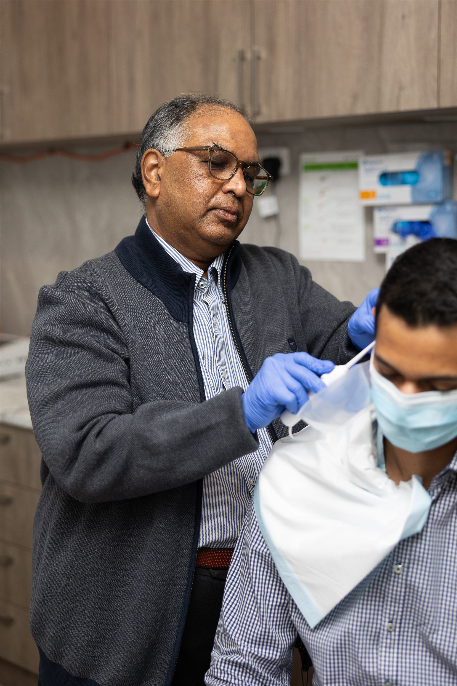
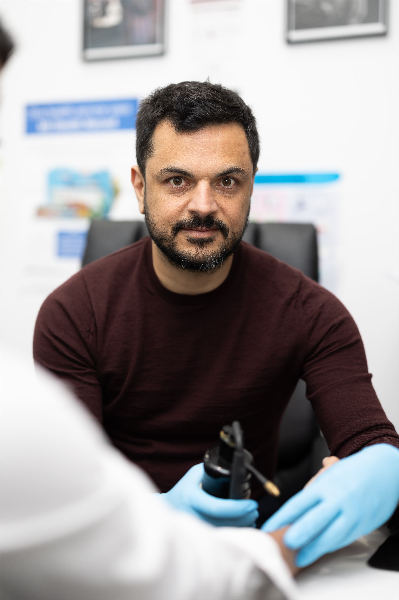

Thoughtful care for every generation.
From a newborn's first immunisations to a health assessment for Nan, your family can be cared for in one familiar place on Whitehorse Road.
Bulk billed on weekdays for concession cardholders and children 15 and under.


We look after families here, often the same ones, year after year.
Balwyn Central Medical opened in 2015 and is a fully accredited general practice, part of ICO Health Group. Across our two clinics on Whitehorse Road you'll find GPs with a wide range of interests, registered nurses on site, and a pharmacy and pathology collection in the same building.
It means you can see your doctor, fill a script and have tests done in one visit, with a team that already knows your history.
For every stage of family life
Start with your GP for anything at all. If you need more, we'll coordinate it from here.
Everyday GP care
Check-ups, scripts, referrals, results and the things that just don't feel right.
Babies & children
Immunisations, growth checks and the 4-year-old Healthy Kids Check.
Women's health
Cervical screening, contraception, pregnancy care and menopause.
Men's health
Heart, prostate and mental health, handled with discretion.
Health assessments
Structured check-ups for eligible age groups, including 75 and over.
Ongoing conditions
Care plans and regular reviews with your GP and nurse.
Mental health
A private conversation with your GP, and a care plan if it would help.
Skin checks
Spot and full-body checks, with biopsies and excisions on site if needed.

One visit, less running around
See your GP, then the rest is just down the corridor.
- Registered nursesAlways on site
- PharmacyPriceline Pharmacy Balwyn, 427 Whitehorse Rd
- PathologyDorevitch, walk in, Mon to Fri, 8:30am to 12pm
- Allied healthPhysio, dietetics, podiatry, speech pathology and psychology
The people who look after you
Choose a doctor to see their special interests and the procedures they perform.



Clear fees, no surprises
Your out-of-pocket fee for a GP consultation, from .
Bulk billed.
Missed appointments. A non-rebateable fee applies, so please let us know if you can't make it.
When you can't come in
See your own doctor by phone or video for scripts, referrals, results and follow-ups.
Available to patients who have seen one of our doctors face to face in the last 12 months.- Book a phone or video consultOnline, or by calling reception.
- We confirm the detailsIncluding how your doctor will reach you.
- Speak with your GPScripts, referrals and requests are sent through, with follow-up as needed.
Two clinics on Whitehorse Road
A short walk apart, in the heart of Balwyn.
427 Whitehorse Rd
Balwyn VIC 3103
- Monday to Friday
- 8:30am to 6:00pm
- Saturday and Sunday
- 8:30am to 5:30pm
411 Whitehorse Rd
Balwyn VIC 3103
- Monday to Friday
- 8:30am to 6:00pm
- Saturday and Sunday
- Closed
After hours, home visits for existing patients are available through 13SICK on 13 74 25. In an emergency, always call 000.